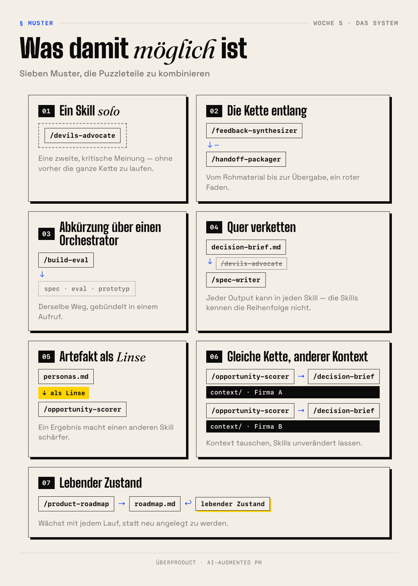
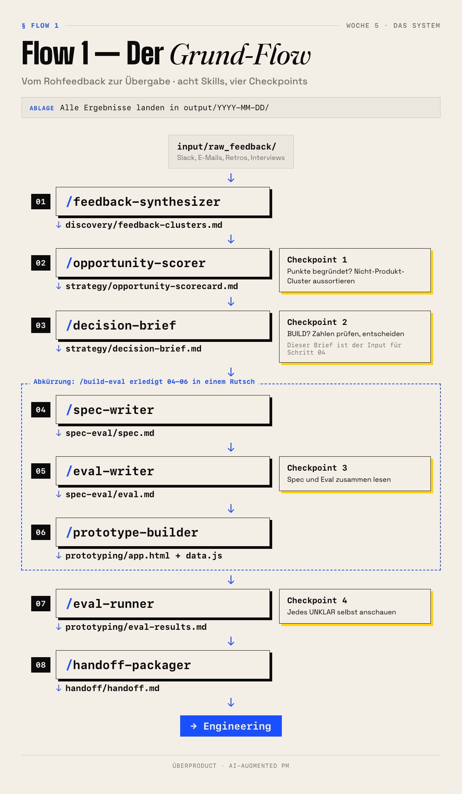
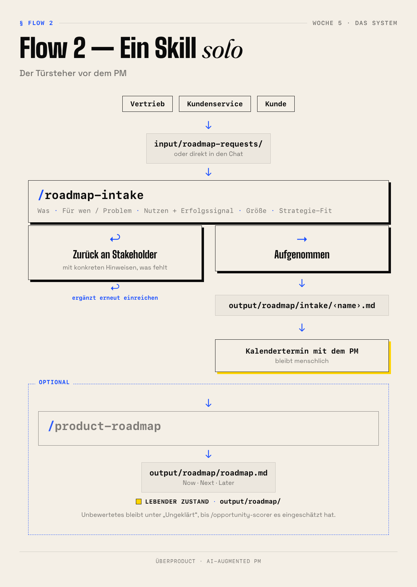
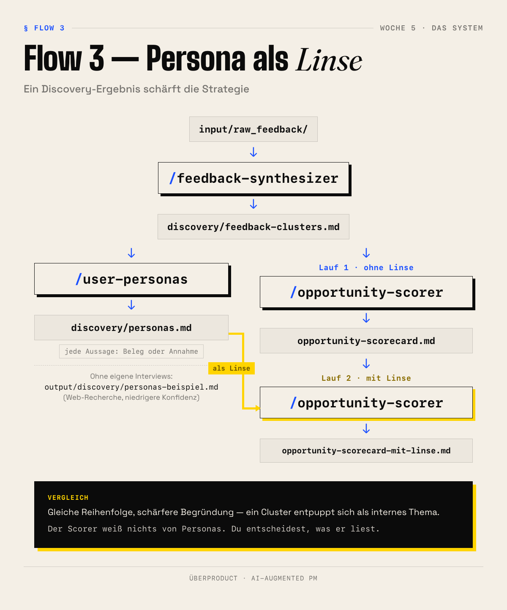

AI-Augmented PM — Woche 5
Jeder Prompt fängt bei null an.
Kein gemeinsamer Kontext.
Kein Gedächtnis. Kein Zusammenhang.
Du erklärt deinem Unternehmen jeden Tag neu wer ihr seid.
Nicht mehr Automatisierung — derselbe Dreiklang wie in Woche 1, jetzt fest im System.
Jeder Skill: eine SKILL.md + ein kurzes README.
Dieselbe Kontext-Regel für alle.
Dieselbe Output-Konvention für alle.
Alles Markdown. Alles in einem Repo.
Der Output des einen Skills wird automatisch lesbarer Input für den nächsten.
| Bereich | Zweck |
|---|---|
| Discovery | Was sagen Kunden, Nutzer, Daten? |
| Strategy | Was bauen wir — und warum? |
| Roadmap | In welcher Reihenfolge, mit wem? |
| Spec & Eval | Was genau wird gebaut, wann ist es gut? |
| Prototyping | Funktioniert die Idee als Artefakt? |
| Handoff | Was braucht Dev zum Starten? |
| Meta | Wo stehe ich, was fehlt? |
Inhaltsverzeichnis doppelt: als Text unter skills/ · visuell unter doc/System-Karte.html
Lauf-Artefakte
Spec, Scorecard, Prototyp → output/YYYY-MM-DD/
Ein Lauf, ein Ordner. Nichts wird überschrieben.
Lebender Zustand
Roadmap → output/roadmap/ System-Audit → output/meta/
Wächst mit jedem Lauf. Wird nicht neu angelegt.




Die sechs Lektionen dieser Woche — live durchgespielt.
Struktur, Überblick, Muster — und drei Flows: Grund-Flow, Türsteher, Persona als Linse.
Im Lauf der Woche kommen weitere Flows dazu.
Hier und in /kurs als weitere Schritte, sobald die passende Lektion live ist.
Eigene Flow-Idee? Jetzt notieren.